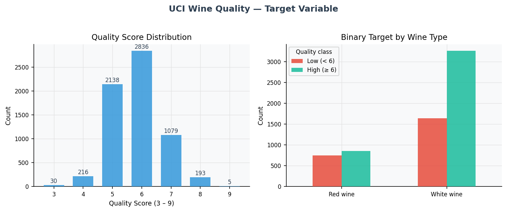
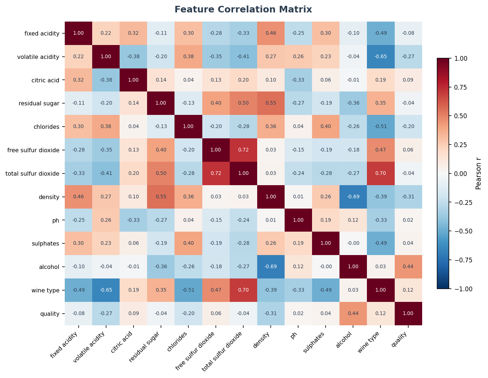
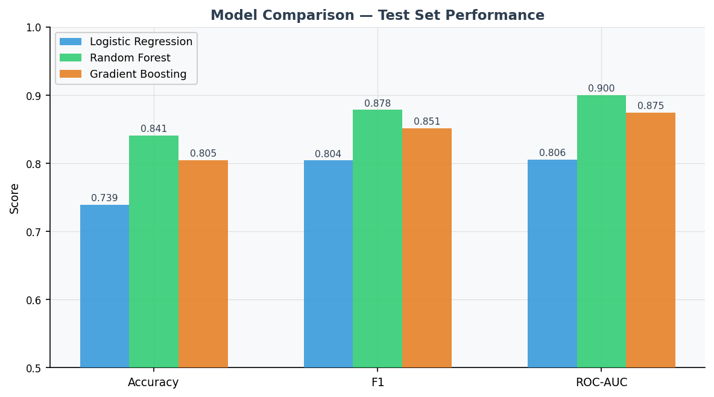
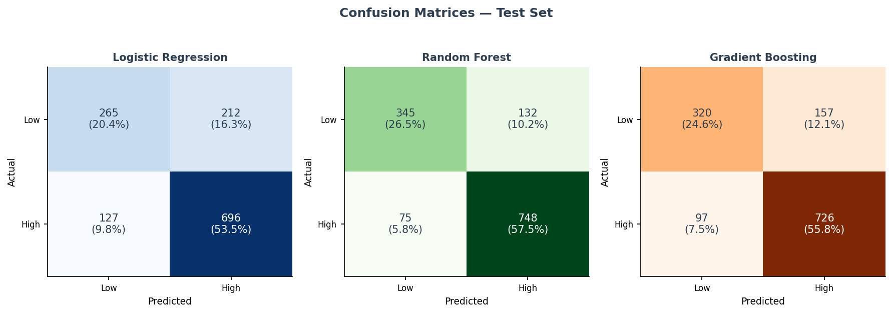
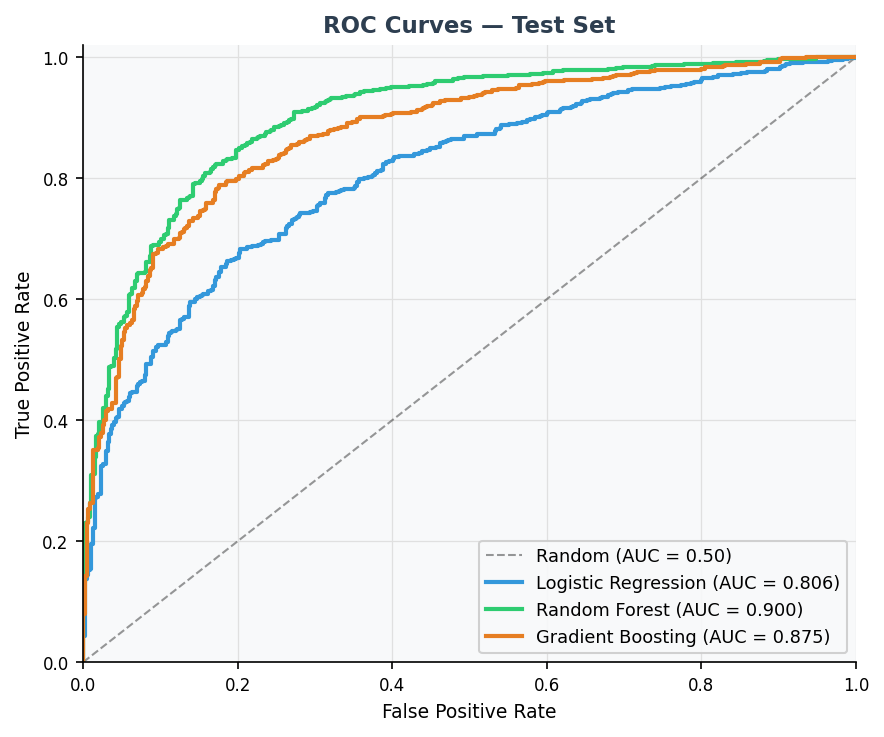
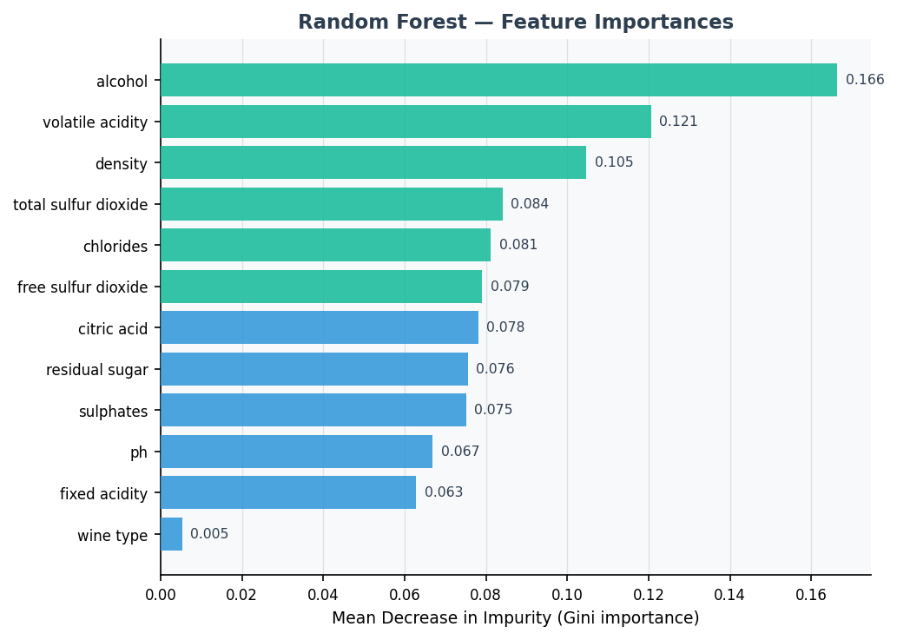

Domain
Applied Machine Learning
Data
UCI Wine Quality (6,497 rows)
Task
Binary classification
Language
Python 3.13
Status
Reproducible ML case study
Tests
11 pytest tests passing
Role relevance
Demonstrates an end-to-end supervised-learning workflow: data ingestion, preprocessing, leak-free sklearn pipelines, model comparison, validation, visualisation, testing, and reproducible documentation.
Summary: This project demonstrates an end-to-end supervised machine-learning workflow on a public structured dataset: data ingestion, preprocessing, leak-free sklearn Pipelines, model comparison, validation, visualisation, and reproducible documentation. Random Forest achieves the best test-set performance: Accuracy 0.841 · F1 0.878 · ROC-AUC 0.900.
Research Question
Can a rigorous, leak-free sklearn Pipeline — from raw data to validated model and visual report — produce defensible predictions on a real-world structured dataset? The project prioritises process quality and reproducibility alongside predictive performance: the code should be auditable, the preprocessing should be identical at training and inference time, and all outputs should be reproducible from a single command.
Dataset
The UCI Wine Quality Data Set combines red wine (1,599 rows) and white wine (4,898 rows) measurements from the Vinho Verde region of Portugal. Each row is one bottle described by 11 physicochemical measurements (acidity, sulphates, alcohol content, etc.) plus a sensory quality score (3–9) assigned by at least three blind-tasting human experts.
A binary target is derived from the quality score: high quality (score ≥ 6, label 1) versus low quality (score < 6, label 0). A wine_type column (0 = red, 1 = white) is added on combining the two files.
Data source
UCI Machine Learning Repository — Wine Quality Data Set. Cite: P. Cortez et al., Decision Support Systems 47(4), 547–553 (2009). Open access; no authentication required.
Pipeline
1
Data Ingestion & Validation (src/data.py)
Downloads red and white wine CSVs from the UCI repository, combines them, adds a wine_type flag, validates schema and missing values, and produces a stratified 80/20 train/test split (5,197 train · 1,300 test).
2
Preprocessing (src/features.py)
A ColumnTransformer applies z-score standardisation to the 11 numeric features and passes wine_type through unchanged. The transformer is always fitted inside the Pipeline, so test data and cross-validation folds can never see training statistics.
3
Model Training (src/modeling.py)
Three candidate models are trained — Logistic Regression, Random Forest (200 trees), and Gradient Boosting (200 estimators, learning rate 0.1) — each wrapped in a full sklearn Pipeline alongside the preprocessor. Trained Pipelines are serialised to disk via pickle.
4
Evaluation (src/evaluation.py)
Each model is evaluated on the held-out test set (Accuracy, Precision, Recall, F1, ROC-AUC) and via 5-fold stratified cross-validation on the training set. Results are saved to outputs/tables/model_comparison.csv.
5
Visual Reporting (scripts/visualise.py)
Generates six static figures using matplotlib: target distribution, feature correlation heatmap, model comparison bar chart, confusion matrices, ROC curves, and Random Forest feature importances. All figures are reproducible from code — no manual editing.
Results
Dataset split: 5,197 train · 1,300 test · 63.3% high-quality class in both splits (stratified). Best model: Random Forest.
Model Comparison — Test Set
| Model | Accuracy | F1 | ROC-AUC | CV Accuracy |
|---|
| Logistic Regression |
0.739 | 0.804 | 0.806 | 0.743 ± 0.010 |
| Random Forest |
0.841 | 0.878 | 0.900 | 0.815 ± 0.008 |
| Gradient Boosting |
0.805 | 0.851 | 0.875 | 0.791 ± 0.010 |
CV = 5-fold stratified cross-validation on training data; mean ± standard deviation.
Top feature importances (Random Forest): alcohol, volatile acidity, density, sulphates. These align with established oenological knowledge: alcohol content and volatile acidity are among the strongest predictors of perceived wine quality.
Figures

Fig. 1 — Target variable distribution. Quality scores concentrate at 5–7. White wines have a higher proportion of high-quality labels (quality ≥ 6) than red wines.

Fig. 2 — Feature correlation matrix. Alcohol content is the most positively correlated feature with quality; density and volatile acidity show notable negative correlations.

Fig. 3 — Model comparison on the held-out test set. Random Forest outperforms both baselines on all three reported metrics. The logistic regression provides a useful lower bound and confirms that the ensemble gains are non-trivial.

Fig. 4 — Confusion matrices for all three models on 1,300 test samples. Random Forest achieves the best true-positive and true-negative rates; all models struggle more with the minority low-quality class.

Fig. 5 — ROC curves on the test set. Random Forest (AUC 0.900) dominates throughout the false-positive rate range, confirming consistent discriminative advantage over the full threshold spectrum.

Fig. 6 — Random Forest feature importances (mean decrease in impurity). Alcohol, volatile acidity, density, and sulphates account for a large share of the tree-based discriminative signal. Note: Gini importance is biased toward high-cardinality continuous features; permutation importance would give a more balanced view.
Limitations
- Binary threshold: The quality ≥ 6 threshold was chosen for demonstration. Shifting the threshold to ≥ 7 (a stricter definition of high quality) changes the class balance substantially and would likely alter model rankings.
- Feature importance bias: Gini-based importances overestimate the importance of high-cardinality continuous features. Permutation importance or SHAP values would provide a more reliable picture.
- Class imbalance: 63% high-quality is mild imbalance; threshold-tuning or class weighting could improve recall for the minority (low-quality) class if operational cost asymmetry is important.
- No hyperparameter search: Models use sensible defaults, not grid- or Bayesian-searched parameters. A tuning step could improve performance further, particularly for Gradient Boosting.
- Gini feature importance: The feature importance chart reflects tree structure, not causal relationships. Correlation with an omitted variable (e.g., wine region or producer) could drive apparent importance.
Next Steps
- Add Bayesian hyperparameter search (Optuna) for Random Forest and Gradient Boosting
- Replace Gini importances with SHAP values for more reliable feature attribution
- Extend to multi-class classification (predict the full 3–9 quality scale)
- Add calibration curves and probability threshold optimisation
- Containerise the environment with Docker for full cross-machine reproducibility
Tools
Python 3.13
scikit-learn
pandas
numpy
matplotlib
pytest
sklearn Pipeline
ColumnTransformer
Git
Makefile
Reproducibility
The full pipeline runs via four numbered scripts (download_data.py → train.py → visualise.py → pytest), or with a single make all command. All random states are fixed; the download script records the data access date; trained Pipelines are serialised to models/*.pkl. All 11 pytest smoke tests pass, covering schema validation, preprocessor output shape, no-leakage properties, model fitting and prediction, and metric ranges.
Data use note
This project uses the UCI Wine Quality Data Set, which is publicly available and carries no personal data or sensitive attributes. It is a methodological demonstration of supervised learning workflow quality. No operational or commercial wine-quality prediction is implied by the results.